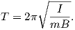

BACKGROUND: read Kono, (2007); Merrill et al. (1996), Chapters 1, 2.4, 4,
6.4.
The magnetic field is one component of the highly complex Earth system. It
interacts with the atmosphere, the biosphere, the deep mantle and even the inner
core. It also has the useful property of pointing roughly North (or South).
Records of the Earth’s magnetic field play a role in many aspects of Earth
Science; hence some knowledge of how it behaves is important to all Earth
scientists. The following introduces some of the reasons for studying the
geomagnetic field.
- Atmospheric interaction: Radioactive forms of carbon, beryllium and
chlorine are produced in the atmosphere by cosmic ray bombardment.
The decay of these isotopes is used for dating purposes in a wide variety
of disciplines. There are large variations in ages predicted from tree
ring, varve or ice layer counting or U/Th dating and those estimated
by radiocarbon dating (see Figure 14.1). Some of these variations are
caused by changes in the carbon balance between the atmosphere
and the deep ocean (which is a reservoir of old carbon) and some
could be caused by changes in magnetic field strength. Because the
magnetic field shields the atmosphere to a large extent from cosmic
rays, changes in the intensity of the magnetic field result in changes
in production, hence are key to deriving accurate age information.
To date, there is rather poor agreement between the variations in
radiocarbon production predicted using changes in paleointensity of
the geomagnetic field (compare Figure 14.1b with c.) Either the field
variations are not known, the relationship between those variations
and radiocarbon production is not known or the actual variations in
production are not known because of unconstrained reservoir effects
(or any combination of these factors).
- Biospheric interaction: Some life forms make magnetic crystals
(Figure 6.12). In the case of magnetotactic bacteria, these tiny
magnets are used for physical orientation. In some cases, animals may
use magnetic field lines for navigation.
- Deep mantle interaction: Studies of seismic waves have demonstrated
large variations in seismic velocity near the core mantle boundary.
There appears to be an annulus of faster velocities surrounding the
Pacific ocean which may reflect the influence of cold subducted
slabs. The geomagnetic field is generated by convection in the outer
core. This convection could be a strong function of the thermal
boundary conditions near the core mantle boundary. Temperature
variations in the lowermost mantle therefore could conceivably
have an effect on the geomagnetic field (e.g., Glatzmaier et al.,
1999). Is there any evidence for this? Are there any changes in the
magnetic field as a function of long term changes in the core mantle
boundary?
- Inner core interaction: Numerical simulations of the magnetic field
predicted that the process of generation of the magnetic field interacted
with the inner core in such a way as to make it spin faster than the rest of
the Earth (Glatzmaier and Roberts, 1996). The effect has been sought in
seismic data (e.g., Song and Richards, 1996), although its existence is still
a matter of debate.
- Tectonic and Geologic applications: Paleomagnetic data often are a critical
component of stratigraphic and tectonic investigations because they provide
temporal and paleogeographic constraints unavailable by any other
method. Therefore, it is useful to know what sorts of data can be
expected from records of the geomagnetic field, as oppose to geological
modification through initial recording bias, overprinting, or post-formation
rotation. It is also useful to know how long one must average the
observations to achieve a reasonable estimate of the time averaged
field (TAF) and whether or not it can be approximated by a GAD
model.
- Are we heading toward a reversal?: The Earth’s magnetic field has
dropped in intensity since it was first measured. This observation,
combined with the fact that the reverse flux patches on the core
mantle boundary appear to be growing, lead to speculation that the
geomagnetic field might be starting to reverse its polarity (e.g., Hulot
et al., 2002). What is the likelihood that this will happen? What
does the field do when it is about to reverse? [Also, what does
it do when it is reversing?] What is the average intensity of the
field and how frequently does it do what it is doing now without
reversing?
To answer some of the questions just raised, we need measurements of the
geomagnetic field. The geomagnetic field changes on frequencies of 10s of
microseconds (radio waves) to millions and perhaps billions of years. Direct
observations contribute to our knowledge of field behavior for the last few
centuries, but on longer times scales we need to use paleomagnetic and
archaeomagnetic techniques. We will first review what is known from historical
measurements of the geomagnetic field. Then we will turn to what we
can glean from accidental records made by archaeological and geological
materials.
The magnetic properties of lodestone were already well known by the early
Greeks. Aristotle (384-332 BCE) wrote of the work of Greek philosopher Thales
of Miletos (624-546 BCE) in his book on the soul (De Anima):
Thales, too, to judge from what is recorded about him, seems to
have held the soul to be a motive force, since he said that the
magnet has a soul in it because it moves the iron.
But the earliest compass appears to date from the first century in China.
Lodestone spoons (see Figure 14.2a) were placed on bronze plates, often
decorated with images of the Big Dipper and other heavenly images. These
“south pointers” were apparently used primarily for prognostication, geomancy
and Feng Shui. It was not until sometime in the late 14th Century that
compasses were used for sea-going navigation in China.
According to Needham (1962), changes in magnetic declination were discovered
in China around 720 CE when the astronomer Yi-Xing measured magnetic
declination (see Figure 14.2b). The compass arrived in Europe some time in the
12th century. Magnets and compasses were discussed in a letter (Epistola) by
Petrus Peregrinus written in 1269 (finally printed in 1558). Apparently the idea
of declination did not accompany the compass. The deviation of magnetic north
from true north was not rediscovered by Europeans until the early 1400s.
Europeans began to make systematic measurements of declination in the
early 1500s. Magnetic inclination was discovered in the mid-1500s in
Europe.
Gilbert (1600) noted variations in field strength with latitude based on the
sluggishness or rapidity with which a compass settled on the magnetic direction.
Magnetic intensity was first measured quantitatively in the late 1700s
by French scientist Robert de Paul, although all records were lost in a
ship wreck. The expedition sent to search for the lost ship made several
measurements, using the period of oscillation T of a vertical dip needle with
magnetic moment m and moment of inertia I. These are related to B
by:

These measurements supported Gilbert’s observation that the intensity of the
field increases away from the equator.
The internal origin of the magnetic field was discovered by Gilbert in 1546 who
made a systematic study of the magnets and the Earth’s magnetic field,
published in 1600. While aware of deviations of magnetic declination from true
north, Gilbert thought that the field was unchanging in time. In 1634 Gellibrand
compared declination measurements made in London over a period of some 50
years and concluded that the geomagnetic field changes. Thus Europeans
discovered secular variation of the magnetic field in 1634, nearly a millenium
after the Chinese.
Captain Edmond Halley carried out scientific exploration at sea with the
expeditions of the Pink Paramore (1698-1701). He produced the first geomagnetic
chart (Figure 14.3) sometime between 1700 and 1702 (see Reeves, 1918). Halley
noticed that some geomagnetic features appeared to be moving to the west, a
phenomenon known as westward drift. Compare for example the “line of no
variation” in Figure 14.3 with the line of zero declination from the IGRF of
2005. It has moved significantly to the west in the equatorial and southern
Atlantic realms.
Gauss provided the mathematical framework we use today for dealing with
geomagnetic data when he derived the spherical harmonic expression for the
geomagnetic potential field (see Chapter 2). The first such analysis (done in
1835) was based on 84 data points evaluated on an evenly spaced grid
from isomagnetic charts of the magnetic field elements available at the
time.
Fastforwarding to the current millenium, we find researchers still poring over
these centuries old measurements. These ship’s logs contain a huge treasure trove
of measurements of declination and sometimes inclination since the 16th
century. Such data form the basis for the GUFM1 geomagnetic field model
(Jackson et al., 2000). The strength of the radial component of the magnetic
field inferred for the core mantle boundary at two time intervals in the
GUFM1 model is shown in Figure 14.4. Compare Figure 14.4b with
Figure 2.3a in Chapter 2 which is the strength of the magnetic field
observed at the surface. There are more so-called flux patches (the spots of
higher intensity) in Figure 14.4b because the field was evaluated closer to
the source (the core), but the general pattern is similar. The field for
1600, however, was somewhat different. The number and positions of the
flux patches has changed substantially since then. Some flux patches,
in particular the prominent patch that is now over Africa, have moved
from the Indian ocean, a phenomenon largely responsible for westward
drift.
As already mentioned, observatory measurements of the intensity of the magnetic
field are only available since the mid-19th century. These show that the large
changes in declination and inclination were also accompanied by even more
dramatic changes in field strength. We plot the intensity of the field
evaluated from the GUFM1 model for San Diego, CA, in Figure 14.4c. If the
field continues on its recent trajectory, it will reach zero by the year
2500.
Historical observations quickly run out as we go back in time. Prior to 720 CE
there are no surviving human measurements. Yet the average field based on the
historical measurements (e.g., Jackson et al., 2000) is clearly not GAD. To see
how observations of the magnetic field such as westward drift, quasi-stationary
flux lobes and the degree of “GADness” change through time, we must turn to
rock and archaeological materials to give us a picture of the ancient geomagnetic
field.
Strongly magnetized rocks (as opposed to the mineral lodestone) had been
noticed during the 1700s because of their effect on compass needles, but the fact
that certain rocks were magnetized in the direction of the Earth’s field was
discovered by Delesse in 1849 and Melloni in 1853. Folgheraiter extended
the study of fossil magnetizations to the magnetic properties of baked
archaeological materials in 1899. Naturally baked material (heated by lava flows)
was studied by David (1904) and Brunhes (1906). In the course of their
investigations, they discovered materials adjacent to normally magnetized rock
that were magnetized in a direction opposite to the Earth’s field. This
first application of the baked contact test led to speculation that the
Earth’s field had reversed its polarity in the past. Mercanton (1926)
argued that the field had reversed polarity because reversely magnetized
rocks were found all over the world. Matuyama (1929) further supported
the argument by demonstrating that all the reversely magnetized rocks
in Japan were older than the overlying normally magnetized rocks. It
was not until the combined use of paleomagnetism and K-Ar dating
allowed researchers in the U.S. and Australia (e.g., Cox et al., 1963;
McDougall and Tarling, 1963) to demonstrate the global synchrony of polarity
intervals that the scientific community embraced the notion of polarity
reversals.
Sedimentary materials were first used for the investigation of secular variation by
Johnson et al. (1948) who measured samples from varved lakes in New England.
Mackereth developed a pneumatic coring device for use in lakes in 1958,
opening the way for studies of the detailed time variations of the magnetic
field.
Spherical harmonic models that push back our understanding of geomagnetic
field behavior to times without deliberate, systematic human measurements rely
on compilations of archaeomagnetic and paleomagnetic data. Constable et al.
(2000) assembled a data set of 24 time series of directional data from
archaeomagnetic and lake sediment sources evaluated at 100 year intervals
(PSVMOD1.0). We plot examples of several of the inclination records from East
to West in Figure 14.5.
These efforts were significantly advanced by the inclusion of archaeological and
volcanic data sets which resulted in a series of models of the form CALSxK.n
(e.g., Korte and Constable, 2003, 2005). The name stands for “Continuous
models of Archaeomagnetic and Lake Sediment data for the past x thousand
years, version n. The first model of this series, CALS3K.1 (Korte and Constable,
2003) included no intensity information, while a more recent version, CALS7k.2,
relies on the data compilation of Korte et al. (2005) including directional and
intensity data from archaeological, sedimentary and volcanic sources spanning
the last seven millennia.
The CALS7K.2 model can be used for a wide range of studies (see Korte and
Constable, 2008). For example, we can begin to answer questions such as the
control of the geomagnetic field on production of cosmogenic nuclides, or
millennial scale variability in the geomagnetic dipole. Geomagnetic field
vectors can be predicted for a given place at a given time. Predictions from
paleosecular variation “master curves” are frequently used to provide
constraints for archaeomagnetic dating (see, e.g., Lanos et al., 2005) and more
accurate field models of the CALSxK style will improve such constraints
considerably.
New data compilations are being published every year (e.g., the Geomagia50
database of Korhonen et al., 2008 and ArchaeoInt database of Genevey et al.,
2008). With these new comprehensive data collections, improved models will be
constructed for longer time series. This is a fast moving field, so stay
tuned.
We mentioned that early workers measuring the secular variation of declination
noticed that certain features appeared to move west with time. A careful look at
the data shows that this tendency is a subtle, probably only locally observed
effect. Yukutake (1967) collected together the data available at the time and
marked the occurrences of maxima and minima in both declination and
inclination. Some of these are marked on Figure 14.5 as examples. Yukutake then
plotted these maxima and minima as a function of age and longitude of the
observation site. The data appeared to suggest that the features moved westward
at a rate of about a half a degree per year. This would mean that the maxima
and minima on Figure 14.5 would rise to the right as they sort of do, but the
data are rather unconvincing.
For more distant times in the past, accurate chronological constraints become
difficult and direct comparison of geomagnetic features globally becomes more
difficult. Field models of the GUFM and CALSxK type which predict
geomagnetic field vectors for any place at any time become increasingly more
difficult to constrain. Nonetheless, there are important questions that can be
addressed.
For example:
- Secular variation over the last few millennia has involved factor of
two changes in geomagnetic field strength and directional variability
of tens of degrees. How does the geomagnetic field behave over longer
time intervals? How strong can the field get? How fast can it change?
- The geomagnetic field is clearly not entirely dipolar, yet much of
paleomagnetic research relies on the assumption that on average the
geomagnetic field is that of a geocentric axial dipole. How much time
must be averaged for this to be a good approximation?
There are two approaches to studying the geomagnetic field in ancient times:
examination of time series from data for which chronological ordering is known
and estimating statistical properties of the paleomagnetic field. In the following
sections we will consider first what we have learned from the time series approach
and then we will turn to statistical models.
In Figure 14.6, we see an example of a detailed record of the geomagnetic field,
obtained from dry lake sediments exposed along the shores of Mono Lake in
California. The geomagnetic field oscillated around the direction expected from a
GAD field over an interval of some 9 meters. The amplitude of directional
variability is generally contained within about 30∘ of the GAD direction. At
about 6.75 m, however, the field direction departed drastically from that,
achieving a nearly antipodal direction. This type of behavior is known as a
geomagnetic excursion.
The definition of a geomagnetic excursion is problematic. The traditional
definition identifies magnetic records in which the VGPs are more than 45∘ away
from the average pole for that time and place as excursional. As we shall see in
Section 14.7, the scatter in VGPs may depend on latitude with higher scatter at
higher latitudes. Basing the identification of an excursion on a given VGP
cut-off angle then means that more excursions will be identified at higher
latitudes.
In a recent review of the phenomenon on excursions, Laj and Channell (2007)
advocated that the term be used for features that represent departures from
“normal” secular variation, for which a full polarity reversal has not been
established. This usage is quite vague, relying on an undefined concept of what is
“normal”. They introduced the term microchron for brief polarity intervals.
These would exhibit fully reversed directions and would presumably be
globally oberved. Other definitions of the term “excursion” have been used
implicitly. For example, excursions are thought to be accompanied by a
decreases in paleointensity (DIPs) (a paleointensity low). For this reason,
some studies (e.g., Guyodo and Valet, 1999) have identified “excursions”
based on the occurrence of paleointensity lows (see Figure 14.7). The
rationale for this lies in the fact that most “deviant” directions that
have paleointensity data associated with them, have “low” values (see
Section 14.3.2).
We name excursions after the place where it was first observed, so the one
documented in Figure 14.6 is known as the Mono Lake excursion. This
presupposes that the Mono Lake excursion is unique from other excursions
requiring a global assessment of excursions and their ages. The age of the Mono
Lake record has been hotly contested. Kent et al. (2002) argue that it
is approximately 38-41 ka, which is quite similar to the age of another
famous excursion, the Laschamp excursion, discovered in volcanics near
Laschamp, France (see Bonhommet and Zähringer, 1969 and references
therein; see also Plenier et al. 2007 for recent review of the Laschamp
data).
Dating sedimentary sequences like the Mono Lake is difficult, but so is dating
very young lava flows like the Laschamp volcanics because of the low abundance
of radioactive potassium. Zimmerman et al. (2006) weighed in on the issue
using relative paleointensity data from the Wilson Creek section (shown
in Figure 14.6) and concluded that the data agree best with relative
paleointensity data unequivocally associated with the Laschamp excursion.
Cassata et al. (2008) report new 36Ar/39Ar ages ranging from 31.6±1.8 ka
to 39.1±4.1 ka for a set of volcanic rocks in New Zealand from which
“excursional” directions and low paleointensities had been obtained (Shibuya et
al., 1992; Cassidy, 2006; Mochizuki et al., 2006). Cassata et al. (2008)
claim that there are two excursions represented in these lavas and tie
them to the Mono Lake and Laschamp excursions, although there is no
volcanic stratigraphy to provide independent proof. The question as to
whether there are in fact two independent excursions is unresolved by these
data.
Resolution of the Mono Lake-Laschamp mystery therefore lies in records with
stratigraphic age control. One such record is the paleointensity proxy record
of 36Cl and 10Be data in Greenland ice cores (GRIP and GISP cores).
The advantage of ice cores is that not only is the relative chronology
straight-forward, layer counting in the ice gives ages that are accurate to within
60 years. The isotopes 36Cl and 10Be are produced in the atmosphere
by cosmic ray bombardment which is modulated by the geomagnetic
field strength and the strength of the solar wind. Therefore changes in
production rate of these isotopes reflects to a large extent reflect changes in
intensity of the field. The isotopic data from the Greenland Summit
cores were summarized by Muscheler et al. (2005). The 10Be flux data do
not show two peaks, but a single peak centered at approximately 39 ka.
The 36Cl data, however are less straight-forward. The data differ in two
papers published in the same year on the same core by the same group
(Wagner et al., 2000a,b). One of these has two peaks, centered on ~31
and ~39 ka respectively, while the other has but a single peak at ~39
ka.
Another way of addressing the Mono Lake-Laschamp dilemma would be to look
at the sedimentary relative paleointensity database. Tauxe and Yamazaki (2007)
compiled nearly all of the published relative paleointensity records. Data with
independent δ18O age control spanning the last 100 kyrs are shown in
Figure 14.8. DIPs at around ~40 and ~ 30 ka are marked with red and blue
bars. These have been interpreted as representing the “Mono Lake” and
“Laschamp” excursional paleointensity lows. While a few records appear to
have both, the evidence is not overwhelming for two globally recorded
features.
Finally, we have the directional records from sedimentary sequences long enough
to record both excursions. Channell (2006) published a detailed record with
adequate independent age constraints from oxygen isotopes spanning the 30 to 42
kyr interval of interest (see Figure 14.9). There are two distinct excursional
intervals in this record, one at ~33 ka and the other at ~40 ka. This core comes
from quite close to another core, SU92-18, whose relative paleointensity is shown
in Figure 14.8 and is one of the cores with two distinct paleointensity
lows.
The conclusion from all these different perspectives is that while there may be
two excursions at about ~30 and ~40 ka respectively, it is still not clear whether
these are global features and which of these the sediments at Mono Lake itself
actually recorded. The conservative interpretation would be that there is a
globally observed feature with nearly fully reversed directions and low
paleointensity values at about ~ 39 ± 2 ka observed in France, California and
New Zealand. Associated low paleomagnetic intensity values at about this
time are also observed at in the Greenland ice cores (by 10Be proxy) and
many deep sea sediment cores (Figure 14.8). This feature should properly
be called the “Laschamp” and if we adopt the terminology of Laj and
Channell (2007), it would be classified as a microchron. It is also clear
from the recent literature, that there is no consensus as to what the
term “excursion” means. Laj and Channell (2007) reserve the term for
what are essentially local phenomena that do not reach fully antipodal
directions. By this measure, the feature occasionally observed at about ~ 30
ka would be an excursion. Because this was first well documented as
being a directional feature distinct from the Lashamp in the Irminger
Basin (Channell, 2006), perhaps it should be named the Irminger Basin
excursion.
We have examined in detail only a few of the many directional and intensity
aberrations that have been called “excursions” over the years. Each has its own
history and many may turn out to be as interesting and difficult to pin down as
the Mono Lake-Laschamp feature(s).
When viewed over sufficient time, the geomagnetic field reverses its polarity, by
which we mean that the sign of the axial dipole term (g10) changes. An example
of a paleomagnetic record of a polarity reversal is shown in Figure 14.10a
(Clement and Kent, 1984). The intensity of the magnetic field appears to drop to
approximately 10% of its average value and the directions migrate from
one pole to the other over a period of several thousand years. When
the polarity is the same as the present polarity it is said to be normal.
When it is in the opposite state, it is said to be reverse. The duration of
the reversal process also appears to be a function of latitude (Clement,
2004).
The details of what happens during a polarity reversal are still rather unclear
because they occur so quickly, geologically speaking. Some high resolution
sedimentary records are like that shown in Figure 14.10 whereby there is an
orderly progression from one polarity to the other. However, a polarity transition
captured by rapidly erupted lava flows records a more complex picture (see
Figure 14.10b). There are a few conclusions we can draw however: 1) they occur
quickly and 2) they are always associated with low geomagnetic intensities (see
Figure 14.11a).
A more controversial observation about directions in extrema was first pointed
out by Clement (1991); when mapped to VGP positions, they plot in preferred
longitudinal swaths (see Figure 14.11b). These swaths are seen in many data
sets, but can be made to disappear when certain criteria are applied (e.g., Prévot
and Camps, 1993). The intriguing thing about the swaths is that they appear
to coincide with the shear velocity anomalies in the lowermost mantle
suggesting some control of the temperature structure near the core mantle
boundary on structure of the paleomagnetic field (see Figure 14.11c).
Whether or not the swaths exist has been debated ever since they were first
observed.
On average, the field spends about half its time in each polarity state, and only a
tiny fraction (1-2%) of the time in an intermediate state. Rocks of both polarities
have been documented from early in the Earth’s history (at least since the late
Archean, see Strik et al. 2003), although the frequency of reversal has changed
considerably through time (see Opdyke and Channell, 1996 and Merrill et al.,
1996).
A list of dates of past geomagnetic polarity reversals is known as a geomagnetic
polarity time scale (GPTS). How the time scale is calibrated is discussed in the
next chapter. For now we will just take it as a given. In Figure 14.12 we show the
polarity history from the marine magnetic anomaly template. The details of the
history of reversals for times older than the oldest sea floor magnetic anomaly
record (about 160 Ma) are sketchy, but will eventually be documented
using sedimentary records of the magnetic field (see e.g., Kent and Olsen,
1999).
Examination of the reversal history shown in Figure 14.12 suggests that
reversals occur at apparently random intervals without a predictable
pattern. Furthermore, the frequency of reversals appears to change (see for
example, Constable, 2003). Above the polarity history in Figure 14.12, we
plot the reversal frequency estimated by Constable (2003). The reversal
frequency is relatively high in the interval 124-150 Ma, but appears to drop
gradually to zero at the beginning of the so-called Cretaceous Normal
Superchron (CNS), a period of some 38 Myr in which no (or very few) reversals
occurred. Since the end of the CNS at about 83 Ma, the frequency of
reversals has increased to the present average rate of about four per million
years.
In Sections 14.1 and 14.2 we reviewed several field models that were time series
of full scale spherical harmonic models. Beyond a certain age limit, however,
there simply are not enough data with sufficient age control and spatial density
to constrain a spherical harmonic model. The approach for longer time
scales has been to look at the average magnetic field or the statistical
characterization of paleosecular variation data. We consider here the time
averaged field.
The last five million years has been a focus for time average field models
because the effects of plate motion are small and there are hundreds of
studies to draw from. Data from lava flows from all over the world have
been compiled into various databases and analyzed from a variety of
view points. It was recently realized that the data had been compiled
using less than optimum criteria and that many more data of higher
overall quality may be required for a robust TAF model to be produced.
Data from the new TAF project are only just becoming available (e.g.,
Johnson et al. 2008). In the mean time, we show a plot of the TAF model of
Hatakayama and Kono (2002) in Figure 14.13. Although the field is not
perfectly GAD, the flux patches seen in the historical field are nearly
erased.
One of the primary assumptions in many paleomagnetic studies is that the
magnetic field, when averaged over sufficient time, averages to that of a GAD
field. This means that if VGPs are averaged from units spanning enough time to
average out secular variation, the mean pole is coincident with the spin axis.
Such a pole is called a paleomagnetic pole. As continents move, they
carry with them rock units that retain a record of the spin axis in the
continental reference frame, so these poles tend to form swaths called apparent
polar wander paths or APWPs. We will learn more about APWPs in
Chapter 16. It is worth mentioning here that it is not very well known
exactly how much time is required to average out secular variation; the
consensus is that it is more than 400 years but less than 5 million. Most text
books claim that 104 –105 years is sufficient. The minimum number of
sampling sites required for a “good” average is also poorly constrained.
Conventional wisdom suggests at least ten, while (Tauxe et al., 2003)
suggest that approximately 100 sites are required to fully sample secular
variation.
Another aspect of secular variation and the time averaged field is the variation
and average strength of the field. Tauxe and Yamazaki (2007) updated the
PINT03 database of Perrin and Schnepp (2004) to include all published
paleointensity data through 2006. We show site-averaged paleointensity
estimates (grey crosses) derived from the updated paleointensity database in
Figure 14.14a. We also include the new data from Antarctica of Lawrence et al.
(2009). The only filter for selecting PINT06 data was that the number of samples
had to be at least two and the standard deviation of the site mean intensity had
to be less than or equal to 15%. Southern hemisphere data are combined with
the Northern hemisphere to decrease latitudinal gaps. To reduce the
effects of regional variations, the site-level estimates are averaged in 15∘
latitude bins (diamonds) with 95% confidence levels calculated using a
bootstrap.
One puzzling feature of Figure 14.14a is the absence of an increasing trend in the
intensity data with latitude. An axial dipole field would have polar intensities
twice those expected at the equator, and although for the present field non-axial
dipole contributions reduce this gain somewhat (as shown by the solid
black line), all conventional wisdom suggests that we would expect the
average field strength to increase (double) with latitude. Also shown in
Figure 14.15a (dashed red line) is field expected from a geocentric dipole with
the strength 80 ZAm2. Neither of these two curves describe the trend in the
available data, which if anything suggest weakening of the field above
65∘.
The apparent trend in intensity might arise from inadequate temporal and
geographic sampling of the geomagnetic field (Lawrence et al., 2009). Or, it is
possible that the influence of the inner core manifests itself in lower average field
strengths at and above the cylinder tangent to it (the tangent cylinder). The
geodynamo results from a complex combination of physical processes in the fluid
outer core (see, e.g., Merrill et al., 1996). The influence of the Coriolis force,
combined with the presence of the inner core results in a separation of the flow
regimes into two distinct regions bounded by a cylinder tangent to the inner core,
parallel to the spin axis. (e.g, Aurnou et al., 2003; see Figure 14.14b). The
spin of the Earth tends to generate columnar convection in the region
outside the tangent cylinder, while inside, the convection tends to be more
3-dimensional (Busse, 1983). It is possible that the flow regime inside the
tangent cylinder results in a depressed field strength observed at high
latitude.
We plot a compilation of paleointensity data since the Jurassic in Figure 14.15,
from Tauxe and Yamazaki (2007). Early compilations suggested that much of the
Mesozoic had a rather low field intensity (the Mesozoic dipole low of Prévot et
al., 1990) with an apparent average intensity of about 25% of the present field
which is ~ 80 ZAm2. The more recent compilation of high quality paleointensity
data by Tauxe and Yamazaki (2007) shows that the Cenozoic also had a
moderate field, suggesting that the Mesozoic “dipole low” is probably a common
state of the geomagnetic field, with anomalously high values occurring in the
latter part of the Cretaceous and early Cenozoic and during the last few
thousand years.
From studies of the time averaged field it seems that, at least for the last five
million years, the field has been dominantly that of a geocentric axial dipole
(GAD). At any particular instant in time, however, there will be significant
deviations owing to the non-axial dipole contributions. This, combined with
distortions in the recording process (some of which were discussed in
Chapter 5) and decreasing preservation of rocks with increasing age makes
evaluating the GAD hypothesis increasingly difficult as we go back in
time.
There has been considerable effort in collecting the data relevant to describing
the statistical character of the geomagnetic field over time. Selected results from
one such collection (that of McElhinny and McFadden, 1997; MM97) are shown
in Figure 14.16. Directions from lava flows less than five million years
old from particular latitudinal bands are plotted with respect to the
expected GAD direction at that particular latitude (D′,I′ from Chapter
2).
Several things are worth mentioning about the data in Figure 14.16. First, it
appears that the equatorial data are more elongate than those from higher
latitudes (something we mentioned in Chapter 12). The elongation parameter E
can be used to quantify this and is the τ2∕τ3 ratio where τi are the eigenvalues of
the orientation matrix Appendix A.3.5). Secondly, the scatter in the directional
data seems to go down with increasing latitude. Thirdly, when the directions
are converted to VGPs, the dispersion in VGPs tends to increase with
latitude.
Before we begin a quick tour of PSV models, we must introduce the
concept of VGP scatter and briefly explain how it has been calculated.
VGP scatter is quantified by the parameter Sp (e.g., Cox 1969), defined
as:
 | (14.1) |
where N is the number of observations and Δi is the angle between the ith VGP
and the spin axis.
Ideally, one would use all the paleomagnetic data available, but we encounter two
problems with this approach. First, some directions are better determined while
others have significant within site scatter resulting from sampling or experimental
errors (or lightning strikes!). Secondly, the interest of the paleomagnetic
community in unusual field states (reversals and excursions) has resulted in their
over-representation in the published literature.
To address the issue of within site scatter, some studies use a cutoff for κ or α95
for inclusion in the calculation, while others adjust the value of Sp to account for
the within site scatter Sw. McElhinny and McFadden (1997) defined a
parameter Sf:
where n is the average number of samples per site.
To address the over-representation of unusual field states in the data base, some
data compilations have used a fixed cutoff for VGP latitude. For example, the
MM97 database culled data with VGP latitudes at 45∘ away from the poles. The
latitudinal dependence of Sp means that a fixed cutoff biases against the more
scattered data collected at higher latitude. This bias results in a rather peculiar
distribution of directions for the high latitude sites (Figure 14.16c). In an
attempt to compensate for this problem, Vandamme (1994) proposed a variable
VGP cutoff . The Vandamme cutoff (A) is found using a recursive method such
that A = 1.8S′ + 5∘, where S′ is the value of Sp for the trimmed data
set.
Most early modeling efforts by the paleomagnetic community focussed on
explaining the variable scatter in directions and VGPs with latitude (see review
by Tauxe et al., 2008). The first model of secular variation of the Earth’s
magnetic field is the dipole wobble model of Creer et al. (1959). This has become
known as Model B (Irving and Ward (1963). Dipole wobble (simulated by
random variations in the three dipole terms of the spherical harmonic expansion
of the geomagnetic field) produces Fisher distributed sets of virtual geomagnetic
poles (VGPs). These are centered around the spin axis. Because of the non-linear
transformation from VGPs to directions (see Chapters 2 and 12), the directions
associated with a circularly symmetric set of VGPs are not generally
circular.
A different PSV model, Model A of Irving and Ward (1963), starts from Fisher
distributed directional data modeled by adding directional perturbations drawn
from a uniform distribution to the expected dipole direction. The VGP
distribution resulting from such a process would be oval at the equator and
become more circular toward the poles.
Model G of ? modeled the increasing VGP scatter with latitude by separating
the geomagnetic field into the “dipole” and “quadrupole” families described by
Roberts and Stix (1972). In the dipole family, the Gauss coefficients
(glm,hlm) produce fields that are antisymmetric about the equator (those
with l - m odd) while in the quadrupole family, the Gauss coefficients
produce fields that are symmetric about the equator (those with l - m
even). The antisymmetric terms contribute more strongly to scatter in
VGPs with latitude than the symmetric terms. Model G thus has the
form:
 | (14.3) |
where a and b are the antisymmetric and symmetric family coefficients,
respectively and λ is latitude. McElhinny et al. (1997) found that values of
a = 0.26 ± 0.02 and b = 11.9 ± 0.7 provided a good fit to their “better quality”
dual polarity data set representing the last five million years.
Paleosecular variation models of the form of Equation 14.3 predict average VGP
scatter as a function of latitude. This is but one of the many interesting and
useful observations about the statistical behavior of the magnetic field and it
would be wonderful if we had a way of predicting for a given latitude the full
vector distributions expected from the geomagnetic field. To find a “full service”
statistical paleosecular variation model, we begin with the work of Constable
and Parker (1988; hereafter CP88). The CP88 statistical paleosecular
variation model assumes that the time varying geomagnetic field acts
as a “Giant Gaussian Process” (GGP) whereby the gauss coefficients
(see Chapter 2) glm,hlm (except for the axial dipolar term, g10 and in
some models also the axial quadrupole term g20) have zero mean. The
standard deviations (see Figure 14.17a) are a function of degree l and
a fitted parameter α (as in Figure 14.17b), and, for l > 2, follow the
formula:
 | (14.4) |
where c∕a is the ratio of the core radius to that of Earth (0.547). Many data sets
show a persistent offset in equatorial inclinations at least in reverse polarity
data sets, consistent with a small non-zero mean axial quadrupolar term
(g20). We are ignoring this effect here because it is in all studies a small
term.
In the GAD version of CP88 in which g20 = 0, once the average dipole
moment g10, its standard deviation σ10 and α are fixed, realizations
of field models can be created by drawing the gauss coefficients from
their respective gaussian distributions. Geomagnetic vectors can then be
calculated for any given location using the usual transformation from the
geomagnetic potential equation to geomagnetic elements (see Chapter
2).
The principal drawback of the CP88 model is that it fails to fit the observed
scatter in the paleomagnetic data with latitude. Most of the subsequent
variations on this theme attempted to address the VGP scatter problem by
introducing more fitted parameters, losing the elegant simplicity of the CP88
model.
The most recent model of the statistical paleosecular variation genre is
the TK03.GAD model of Tauxe and Kent (2004); see also Tauxe et al.
(2008). Like CP88.GAD, TK03.GAD has only three parameters: g10
(set to fit a recent estimate for the long term average intensity of the
axial dipole as in Figure 14.15), α as defined in CP88, but fit to the
more recent compilation of directional data of McElhinny and McFadden
(1997) and a new paramter β which is the ratio of the asymmetric (l + m
odd) to the symmetric (l + m even) gauss coefficients for a given l. We
show the variation in σ with degree for the two families (asymmetric and
symmetric) in Fig. 14.18a. The term β allows a much improved fit to the
paleomagnetic observations (see Figure 14.18b) while the model retains
the simplicity of the CP88 model. Please note that a new generation of
models is on the way that will incorporate the vast amount of new data
being generated (for a preview of things to come, see Johnson et al.,
2008).
In Fig. 14.18c we show the vector end points calculated from 1000 realizations of
the model at 30∘N. The distribution of these vectors predicts what would be
observed at that latitude if we had a large number of observations of the
geomagnetic field or its paleomagnetic proxies.
Models like TK03 can predict the distribution of geomagnetic field vectors at any
location. These, then, can be compared with the observed paleomagnetic
data in order to assess whether the data are consistent with the field
model. The TK03 model was designed to predict values for S in agreement
with those observed in the PSVRL database (see Figure 14.18b), but
there are other attributes of the field that can be predicted as well. For
example, while inclination can be calculated from the simple dipole formula
(see Chapter 2) for any latitude, the elongation of the directions (e.g.,
Figure 14.16a) requires a statistical field model. In fact, because elongation goes
down with increasing latitude, while inclination goes up, there is a unique
elongation/inclination pair that is consistent with a given statistical field model.
The elongation/inclination trend calculated from the TK03.GAD model is shown
in Figure 14.18d.
Data from the last five million years fit the model predictions as it was
designed to do, but the model can be tested through time by calculating the
elongation/inclination pair for data sets of any age. The requirements are that
the data are referenced to paleo-horizontal, that the directions represent the
ancient geomagnetic field (they are not biased by overprinting, inclination error,
etc.), and that there be a sufficient number to represent the statistical variability
of the ancient geomagnetic field. There are not many data sets that satisfy these
requirements. Tauxe et al. (2008) compiled data sets from ancient large igneous
provinces that did: the Deccan Traps in India (Vandamme et al., 1991,
Vandamme and Courtillot, 1992), the Faroe Island basalts (Riisager et al.,
2002), and Kerguelen (Plenier et al., 2002). The elongation/inclination
pairs from these data sets are plotted on Figure 14.18d for comparison
with the model predictions. It appears that the TK03.GAD model can
be used as a guide to the geomagnetic field behavior for at least the
Tertiary.
SUPPLEMENTAL READINGS: Tauxe et al. (2008); Johnson et al. (2008).
Problem 1
You learned how to use the function ipmag.igrf in the problems for Chapter 2.
The program uses the official DGRF and IGRF field models since 1945. A special
feature of the program, however, is the use of the GUFM1 coefficients of Jackson
et al. (2000) for dates between 1600 and 1945. Note that while ipmag.igrf only
calculates a single date at a time we can easily set up a list with results for a
time series.
a) Calculate the variation in inclination of the geomagnetic field in Sicily
(latitude of 38∘, longitude of 14∘E) between 1600 and 1900 (at 10 year intervals)
and make plots of the field elements using the matplotlib plotting utility. Use
the most recent data model available.
b) The GUFM1 coefficients were estimated using deliberate, human observations.
An independent data set is that from lava flows and archaeological artifacts. These
can be searched using the GEOMAGIA web set at http://geomagia.ucsd.edu.
In the Chapter_14 data directory there is a file called geomagia_sel.txt with
inclination and age data from near the latitude and longitude of the site
examined in a). Modify your program to plot these data on top of the GUFM
predictions. How do they compare?
c) Find the fRolph et al. (1987) paper in the geomagia data set as an example.
and read the paper. Are the data reliable? Make an equal area plot of the
directions in the geomagia download file. Do they look ok?
Problem 2
Paleointensity data have been assembled into databases for quite some time. A
recent version of the compilation is from this website: ttp://eart.liv.ac.uk/pint/.
Download it and have a look using Panda’s read_excel function.
a) Find all the VDM/VADM estimates for the last 10 Myr. Select the data
that were done with a Thellier double heating type experiment, with
pTRM checks (T+) and those that were done with the Shaw method
(S). Plot the VDM/VADMs from both sets versus age. Are there any
differences?
b) Now find all the T+ data that have polarity information for the last 10 Myr.
Separate the data into N, R, and T groups. Plot these versus age (with different
symbols). Are there any differences?
Problem 3
The dependence of scatter in directions and VGPs on latitude is well
known.
a) Go to the MagIC database website and download the data for one high
latitude data set (Lawrence et al., 2009):
http://earthref.org/MagIC/doi/10.1029/2008GC002072
Create a Project Directory and put the file in it. Unpack it with
ipmag.download_magic.
b) Read in the site mean data from the sites.txt file into a Pandas DataFrame,
knowing that the files are always tab delimited and have a header in the
second line (header=1 to Pandas). Look at the directions in equal area
projection using the ipmag.plot_net and ipmag.plot_di functions
from within your Jupyter notebook. Be sure to get rid of all the blank
directional data (MagIC headers of dir_dec, dir_inc with the Pandas function
dropna.
Plot the VGPs with ipmag.plot_vgp To do that, you will need to have
Basemap installed. Follow the instructions in the help message to make a simple
map. As this is a dual polarity data set, first make an nested [lon,lat] array and
use pmag.flip to separate it into normal and verse antipodes. Be sure to drop all
the records with no VGP data in them (using Pandas dropna function)
first.
c) Write a program that will calculate the Sp VGP scatter statistic from
VGPs. What is Sp of the entire data set? [Use the antipodes of the reverse
data.]
d) Now modify your program to calculate Sp as a function of latitude cutoff, i.e.,
make an option to exclude VGP latitudes with latitudes more than a
specified amount away from the spin axis. What is the “best” latitude
cut-off?
e) A file called hawaii.txt is stored in the Chapter_14/Problem_3 directory.
This is a compilation of all the data from Hawaii used in a recent analysis
of the time averaged field project by Cromwell et al. (2018). Repeat
problems 2b-d on the Hawaiian data set. Is there a latitude dependence of
Sp?
f) Compare these values of Sp to those predicted by Model G.
Problem 4
a) Use the program ipmag.tk03 to generate a nested list of 100 vectors for a
latitude of 20∘ (the approximate latitude of Hawaii). Plot them using the
functions ipmag.plot_net, ipmag.plot_di. Hint, it would be easiest to
turn the output of ipmag.tk03 into an array and take the transpose.
Then the first element is an array of declinations and the second is the
inclinations.
b) Find the present IGRF and GAD directions at 20∘ and -156∘ using the
functions ipmag.igrf and pmag.pinc. Rotate the directions in hawaii.tk03 to
the expected GAD direction using the function pmag.dodirot_V. Hint: try the
nice NumPy function column_stack to put your directions into the right
format. Plot these rotated directions using the ipmag functions. Now rotate the
directions extracted from hawaii.txt in Problem 2e plot them in equal area
projection. How do the directions predicted by the PSV field model compare with
the data set from Hawaii?
c) Use the function pmag.doprinc to calculate the eigenparameters of the
orientation matrix of the Hawaiian directions (see Chapter 9 and the Appendix
on Orientation Tensors here:
https://earthref.org/MagIC/books/Tauxe/Essentials/WebBook3ap1.html#x20-220000A.3.5.
What is wrong with either the GAD model or the data set?